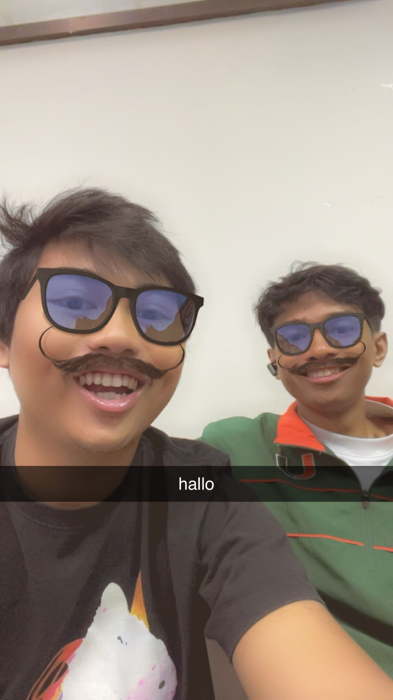

1. Hobi Saya
2. Tentang Kegiatan Saya
Saya senang Ngopi dan mendengarkan musik ketika sedang memiliki waktu luang.
Saya juga suka jalan-jalan bersama teman keluar kota bahkan berkeliling desa.
3. Makanan Favorit
- Nasi Goreng
- Mie Ayam
- Ayam Geprek
4. Media Sosial
Kunjungi Instagram saya
5. Foto

6. Kegiatan Saya
| Hari | Kegiatan |
|---|---|
| Senin | Kuliah |
| Selasa | Kuliah |
| Rabu | Kuliah |
| Kamis | Kuliah |
| Jumat | Kuliah |
| Sabtu | Tidur |
| Minggu | Tidur |
7. Format Kalimat
Saya sedang belajar HTML.
Kalimat ini rata kiri.
Kalimat ini rata tengah.
Kalimat ini rata kanan.